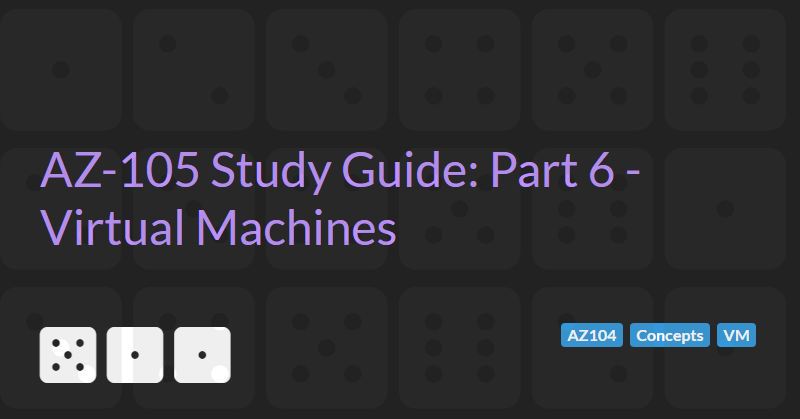

Azure Virtual Machines
The AZ-104: Azure Administrator Associate certification requires subject matter expertise in implementing, managing, and monitoring an organization's Microsoft Azure environment, including virtual networks, storage, compute, identity, security, and governance.
In part 6 of the guide we will cover managing virtual machines. Azure Virtual Machines (VMs) are one of several types of on-demand, scalable computing resources that Azure offers. Typically, you choose a VM when you need more control over the computing environment than the other choices offer.
Azure Virtual Machines Overview
Azure Virtual Machines are largely defined by three main properties: image, generation, and size.
VM Image
An image is the base operating system of the VM. The capabilities of the VM are largely defined by the image type. Images can be broadly categorised into two main types: Windows and Linux. Within these broad types there is a large degree of variation (with over 1,600 images in the Azure marketplace).
Variations differ in terms of distribution and pre-installed software.
Windows images including desktop (Windows 7, Windows 10, Windows 11 etc.) and server (Windows server and Windows server core 2012, 2016, 2019 and 2022 ).
Linux images support most common distributions including Ubuntu, Red Hat, CentOS, SUSE and Debian.
Addition installed software may include Visual Studio for Windows images, SQL server for Linux and Windows images, etc.
VM Generation
The image type also determines the generation of the VM. Azure supports two generation: generation 1 and generation 2. Generation 2 VMs support key features that aren't supported in generation 1 VMs. These features include increased memory, Intel Software Guard Extensions (Intel SGX), and virtualized persistent memory (vPMEM).
Generation 2 VMs use the new UEFI-based boot architecture rather than the BIOS-based architecture used by generation 1 VMs. Compared to generation 1 VMs, generation 2 VMs might have improved boot and installation times.
Generation 1 virtual machines support most guest operating systems (including 32-bit operating systems and older OS version such as Windows 7, Windows server 2008, and RHEL/CentOS 5.x series). Generation 2 virtual machines support most 64-bit versions of Windows and more current versions of Linux and FreeBSD operating systems.
VM Size
Azure supports many different size options for Virtual Machines. Sizes are categorised as follows:
- General purpose (Sizes: A, B, D). Balanced CPU-to-memory ratio. Ideal for testing and development, small to medium databases, and low to medium traffic web servers.
- Compute Optimised (Sizes: F, FX). High CPU-to-memory ratio. Good for medium traffic web servers, network appliances, batch processes, and application servers.
- Memory Optimised (Sizes: E, M, DSv2, Dv2). High memory-to-CPU ratio. Great for relational database servers, medium to large caches, and in-memory analytics.
- Storage Optimised (Sizes: L). High disk throughput and IO ideal for Big Data, SQL, NoSQL databases, data warehousing and large transactional databases.
- GPU (Sizes: N). Specialized virtual machines targeted for heavy graphic rendering and video editing, as well as model training and inferencing (ND) with deep learning. Available with single or multiple GPUs.
- High Performance Compute (Sizes: H). Azure's fastest and most powerful CPU virtual machines with optional high-throughput network interfaces (RDMA).
Note that not all VM sizes are supported in all regions. If a region is full for a particular VM size, it may still be availably in a less popular or newer region.
Creating a Windows VM
To create a new Virtual Machine via the Azure portal you need to:
- Go to the create Virtual Machine wizard. There are many ways to start the wizard including:
- Select new resource -> virtual machine from the menu
- Search for virtual machine
- Select add resource from within a resource group
- Select the basic options:
- Select the subscription and resource group that the virtual machine belongs to (or create a new resource group)
- Enter a name. Virtual machines in Azure have two distinct names: virtual machine name used as the Azure resource identifier, and in guest host name. When you create a VM in the portal, the same name is used for both the virtual machine name and the host name. The virtual machine name cannot be changed after the VM is created. You can change the host name when you log into the virtual machine.
- Azure resource names cannot contain special characters /""[]:|<>+=;,?*@&, whitespace, or begin with '_' or end with '.' or '-'. VM names must be between 1 and 64 characters long.
- Select the Region. Choose the Azure region that is right for the VM. Not all VM sizes are available in all regions.
- Select the Availability Options (see here). Azure offers a range of options for managing availability and resiliency for your applications including:
- None. No infrastructure redundancy (default). Provides no special availability
- Availability Zone. Lets you specify which availability zone the VM will be deployed to.
- Virtual Machine Scale Sets let you create and manage a group of load balanced VMs.
- Availability Sets are logical grouping of VMs that allows Azure to understand how your application is built to provide for redundancy and availability.
- Select the Security type. Security type refers to the different security features available for a virtual machine. Security features like Trusted launch and Confidential virtual machines help to improve the security of Azure generation 2 virtual machines. However, additional security features have some limitations, which include not supporting back up, managed disks, and ephemeral OS disks.
- Trusted Launch. At the root of trusted launch is Secure Boot which protects against the installation of malware-based rootkits and boot kits. VMs using Trusted Launch do not support: Azure Site Recovery, Shared disk, Ultra disk, Managed image, or Nested Virtualization. Trusted Launch adds no additional cost to existing VM pricing but a limited subset of sizes and operating systems are supported.
- Confidential virtual machines. These VMs provide a strong, hardware-enforced boundary to help meet your security needs of tenants with high security and confidentiality requirements. Confidential VMs are based on AMD processors with SEV-SNP technology and therefore limited to a subset of VM sizes (such as DCasv5 and ECasv5). These VMs have a limited selection of operating system and regions. Confidential VMs do not support: Azure Batch, Azure Backup, Azure Site Recovery, Azure Dedicated Host, Microsoft Azure Virtual Machine Scale Sets with full OS disk encryption enabled, Limited Azure Compute Gallery support, Shared disks, Ultra disks, Accelerated Networking, or Live migration.
- Spot Instance. Select if the VM should run as a Spot Instance. Spot Instances allows you to take advantage of our unused capacity in Azure at a significant cost savings. At any point in time when Azure needs the capacity back, the Azure infrastructure will evict Spot VMs. Therefore, Spot VMs are great for workloads that can handle interruptions like batch processing jobs, dev/test environments, or large compute workloads. Confidential VMs cannot be deployed as spot instance. Spot prices can be up to 90% cheaper than regular VMs. If the VM is a Spot Instance then the Eviction Type and Eviction Policy must be specified:
- Eviction type. Can be
Capacity onlyorPrice or capacity. With eviction type set toCapacity onlythe VM will be evicted when Azure's excess capacity disappears. The price for the VM will vary between the current price for spot or the price for a standard VM, which ever is less. With eviction type set toPrice or Capacitythe VM will be evicted when Azure's excess capacity disappears, or costs exceed your specified max price (see below). - Eviction policy determines what happens to the virtual machine when it's evicted. Upon eviction, the VM can either be stopped and deallocated if you plan to re-deploy or need access to the disk after eviction, or the VM can be deleted to clean up the VM and disks. If the VM is stopped/deallocated you continue to pay for any disks.
- Maximum price you want to pay per hour. When eviction type is set to
Price or capacity, the maximum price you want to pay per hour determines if your VM will be evicted. If the current price for spot instances increases (due to demand?), the VM will be evicted. The VM will also be evicted if Azure excess capacity is used up. The minimum value of the maximum price is the current spot price. A higher value can be specified to ensure the VM is not evicted due to price increases. - HINT: Add a filter
Azure Spot: Supportedto theSelect a VM Sizedialog to show only VMs that can be spot instances
- Eviction type. Can be
- Select the VM size (see here). For Spot instances a link to "View pricing history and compare prices in nearby regions" is displayed underneath the size. Prices for Spot instances in different regions can vary significantly and selecting another nearby region can reduce costs further. The history chart also displays the variation in spot instance cost and can be used to predict if a low maximum price is likely to result in eviction.
- Select the Windows specific administrator account settings (on the Basic tab of the wizard):
- Username between 1 and 20 characters. Cannot include any special characters (/""[]:|<>+=;,?*@&), end with '.', or be a reserved/disallowed word ("administrator", "admin", "user", "user1", "test", "user2", "test1", "user3", "admin1", "1", "123", "a", "actuser", "adm", "admin2", "aspnet", "backup", "console", "guest", "owner", "root", "server", "sql", "support", "support_388945a0", "sys", "test2", "test3", "user4", "user5")
- Password between 12 and 123 characters long. Passwords must have 3 of the following: 1 lower case character, 1 upper case character, 1 number, and 1 special character. Passwords cannot be a reserved/disallowed word ("abc@123", "P@$$w0rd", "P@ssw0rd", "P@ssword123", "Pa$$word", "pass@word1", "Password!", "Password1", "Password22", "iloveyou!").
- Select the Inbound port rules (on the Basic tab of the wizard). Select which virtual machine network ports are accessible from the public Internet. Limited or more granular network access can be specified on the Networking tab:
- Public inbound ports. Select
Noneto restricted access to sources in the same virtual network, and traffic from Azure load balancing solutions, or choose toAllow selected portsto allow traffic from the public internet to one of these common ports defined bySelect inbound ports. - Select inbound ports. Select common ports to be accessible where the
Public inbound portssettings is set toAllow selected ports. This will allow all IP addresses to access the VM and is only recommended for testing. Settings in the Networking tab allow more fine grained control. Ports that can be selected here are limited to HTTP (80), HTTPS (443), SSH (22), and RDP (3389).
- Public inbound ports. Select
- Select the Windows specific licencing benefits (on the Basic tab of the wizard). VM costs can be reduced by up to 49% with a license you already own using Azure Hybrid Benefit.
- Select the disk options. Azure VMs have one operating system disk and a temporary disk for short-term storage. When you create a Windows VM, the default OS disk is usually 127 GiB (some images have smaller OS disk sizes by default). You can attach additional data disks. The size of the VM determines the type of storage you can use and the number of data disks allowed:
- OS Disk Type. Determines the type of disk used for the OS and temporary disks. Depending on the region, local-redundant storage and/or zone redundant storage options may be available. Disks currently offers five disk types, each intended to address a specific customer scenario:
- Ultra disks for IO-intensive workloads such as SAP HANA, top tier databases, and other transaction-heavy workloads (Max IOPS 160,000).
- Premium SSD v2 (preview) for production and performance-sensitive workloads that consistently require low latency and high IOPS and throughput (Max IOPS 80,000).
- Premium SSDs (solid-state drives) for production and performance sensitive workloads (Max IOPs 20,000)
- Standard SSDs for web servers, lightly used enterprise applications and dev/test (Max IOPs 6,000)
- Standard HDDs (hard disk drives) for backup, non-critical, infrequent access (Max IOPs 2,000)
- Delete with VM. If selected, the OS disk will be deleted when the VM is deleted.
- Enable encryption at host. Encryption at host allows you to encrypt the ABC cache, temp disk, and ephemeral disks on your VM.
- Encryption type. Data is encrypted by default using Microsoft-managed keys (MMK). For additional control, data can be encrypted using customer-managed keys (CMK) via the Azure Key Vault or with double encryption using both a platform key (MMK) and and customer-managed keys (CMK).
- Additional data disks can be configured up to the limit of the VM image.
- OS Disk Type. Determines the type of disk used for the OS and temporary disks. Depending on the region, local-redundant storage and/or zone redundant storage options may be available. Disks currently offers five disk types, each intended to address a specific customer scenario:
- Select the network settings:
- Virtual Network - Create or select the Virtual network that the VM belongs to. Virtual networks are logically isolated from each other in Azure. You can configure their IP address ranges, subnets, route tables, gateways, and security settings, much like a traditional network in your data center. Virtual machines in the same virtual network can access each other by default.
- Subnet - Create or select a subnet within the virtual network. A subnet is a range of IP addresses in your virtual network, which can be used to isolate virtual machines from each other or from the Internet.
- Public IP - create or select a public IP address or select
None. A public IP address is required to communicate with the virtual machine from outside the virtual network. - NIC network security group. A network security group contains security rules that allow or deny inbound network traffic to, or outbound network traffic from, the VM. To simplify management of security rules, it's recommended that you associate a network security group to individual subnets, rather than individual network interfaces within the subnet, whenever possible. The three available selections are:
- None. All ports on this virtual machine may be exposed to the public internet. This is a security risk. Use a network security group to limit public access to specific ports. You can also select a subnet that already has network security groups defined or remove the public IP address.
- Basic. The settings for
Public inbound portsandSelect inbound portson the basic tab are used. - Advanced. The settings for
Public inbound portsandSelect inbound portson the basic tab are used by default and additional inbound and outbound rules can be defined.
- Delete public IP and NIC when VM is deleted. By default, public IP addresses and NICs persist independently from the virtual machine. You can choose to automatically delete the public IP address and NIC when the associated virtual machine is deleted.
- Enable Accelerated Networking. Accelerated networking enables single root I/O virtualization (SR-IOV) to a VM, greatly improving its networking performance. This high-performance path bypasses the host from the data path, which reduces latency, jitter, and CPU utilization for the most demanding network workloads on supported VM types.
- Load balancing. If enabled, the VM can be placed in the backend pool of an existing Azure load balancing solution. Either and existing Application Gateway or Load Balancer can be selected. Application Gateway is an HTTP/HTTPS web traffic load balancer with URL-based routing, SSL termination, session persistence, and web application firewall. Azure Load Balancer supports all TCP/UDP network traffic, port-forwarding, and outbound flows.
- Select the management settings:
- Microsoft Defender for Cloud. Microsoft Defender for Cloud provides unified security management and advanced threat protection across hybrid cloud workloads. Microsoft Defender for Cloud is enabled by default and cannot be disabled.
- Enable system assigned managed identity. A system assigned managed identity enables the VM to authenticate to cloud services (e.g. Azure Key Vault) without storing credentials in code. Once enabled, all necessary permissions can be granted via Azure role-based access control. The lifecycle of this type of managed identity is tied to the lifecycle of the VM. Additionally, each VM can only have one system assigned managed identity. System managed identity must be on to login with Azure AD credentials (see below).
- Login with Azure AD. Use your corporate Active Directory credentials to log in to the VM, enforce MFA, and enable access via RBAC roles. RBAC role assignment of Virtual Machine Administrator Login or Virtual Machine User Login is required when using Azure AD login.
- Enable auto-shutdown. Configures your virtual machine to automatically shutdown daily. Can be used to ensure resource are shutdown out of hours to reduce costs.
- Shutdown time. If auto-shutdown is enabled, configures the time when the virtual machine shuts down daily.
- Time zone. If auto-shutdown is enabled, configures the time zone in which the auto-shutdown time is.
- Notification before shutdown. If auto-shutdown is enabled, sends an email before the virtual machine is shutdown so that you can skip/delay the shutdown.
- Email. If notification before shutdown is enabled, defines the email address where notifications will be sent.
- Enable disaster recovery. Enables Azure Site Recovery which helps to keep your virtual machines running during outages. If enabled the VM will be replicate to a secondary Azure region using recovery vault services.
- Enable hotpatch. Hotpatch allows you to take critical and security updates for your virtual machine without restarting. Hotpatching is available only with Windows Server 2022 Datacenter: Azure Edition Core.
- Patch orchestration options. Patch orchestration options allow you to control how patches will be applied to your virtual machine. Defaults to
AutomaticByOS(Windows only, updates via Windows automatic updates, best for scenarios where interrupting workloads for patching is not an issue.). Can be set to:AutomaticByPlatform- supported by Windows and Linux VMs (but only for supported OS platform images), enables automatic VM guest patching for the virtual machine and subsequent patch installation is orchestrated by Azure, disable Windows automatic updates to avoid duplication. Best for workload availability.Manual- supported by Windows VMs only, disables Automatic Updates. Patches can be installed manually or via an alternative solution.ImageDefault- supported by Linux VMs only, honours the default patching configuration in the image used to create the VM.
- Select the Monitoring settings:
- Alerts:
- Enable recommended alert rules (Defaults to off). If enabled adds commonly used alert rules.
- Alert rules. Clicking the
configurelink allows you to edit the default rules. By default the following rules are enabled with notifications sent to the email address of the user creating the resource.- CPU greater than 80%
- Available memory less than 1GB
- Data Disk IOPS Consumed Percentage greater than 95%
- OS Disk IOPS Consumed Percentage greater than 95%
- Network In Total greater than 500GB
- Network Out Total greater than 200GB
- Diagnostics:
- Boot diagnostics. Use this feature to troubleshoot boot failures for custom or platform images. Boot diagnostics with managed storage account significantly improves creation time of Virtual machines by using pre-provisioned storage accounts managed by Microsoft. Defaults to
Enable with managed storage account (recommended). Can be set toEnable with custom storage accountorDisabled. - Enable OS guest diagnostics. Get metrics every minute for your virtual machine. You can use them to create alerts and stay informed on your applications. If enabled metrics are saved to the selected diagnostics storage account.
- Boot diagnostics. Use this feature to troubleshoot boot failures for custom or platform images. Boot diagnostics with managed storage account significantly improves creation time of Virtual machines by using pre-provisioned storage accounts managed by Microsoft. Defaults to
- Alerts:
- Select the advanced settings:
- Extensions. Extensions provide post-deployment configuration and automation. Select any available extensions such as Azure Pipelines Agent, Chef VM extension for Windows, Datadog agent, Dynatrace OneAgent, TeamViewer Host etc.
- VM applications. VM applications contain application files that are securely and reliably downloaded on your VM after deployment. In addition to the application files, an install and uninstall script are included in the application. You can easily add or remove applications on your VM after create
- Custom data. Pass a script, configuration file, or other data into the virtual machine while it is being provisioned. The data will be saved on the VM in a known location. Your image must have a code to support consumption of custom data. If your image supports cloud-init, custom-data will be processed by cloud-init
- User data. Pass a script, configuration file, or other data that will be accessible to your applications throughout the lifetime of the virtual machine. User data should not be used for storing your secrets or passwords.
- Host Group. Azure Dedicated Hosts allow you to provision and manage a physical server within our data centers that are dedicated to your Azure subscription. A dedicated host gives you assurance that only VMs from your subscription are on the host, flexibility to choose VMs from your subscription that will be provisioned on the host, and the control of platform maintenance at the level of the host.
- Capacity reservation group. Capacity reservations allow you to reserve capacity for your virtual machine needs. You get the same SLA as normal virtual machines with the security of reserving the capacity ahead of time. Capacity reservation group cannot be set on a spot resource.
- Proximity placement groups. Proximity placement groups allow you to group Azure resources physically closer together in the same region. A proximity placement group is a logical grouping used to make sure that Azure compute resources are physically located close to each other. Proximity placement groups are useful for workloads where low latency is a requirement.
Creating a Linux VM
- Go to the create Virtual Machine wizard as described above for Windows VMs.
- Select the basic options (mostly the same for Windows VMs with the following exceptions):
- VM Architecture. Linux VMs support Arm64. Azure provides a choice of x64 or Arm64-based virtual machines to run your applications. x64-based VMs provide the most software compatibility while Arm64-based VMs provide up to 50% better price-performance than comparable x64 VMs. Arm64-based VMs also help developers build Arm-compatible software without cross-compilation.
- Select the Linux specific administrator account settings (on the Basic tab of the wizard):
- Authentication type. Choose whether the administrator account will use username/password or SSH keys for authentication. Azure can automatically generates an SSH key pair and store it for future use. It is a fast, simple, and secure way to connect to the VM.
- Username. For either username/password or SSH key authentication a username is required. For SSH the default username is
azureuser. - SSH public key source (for SSH authentication). Select one of:
Generate new key pair,Use existing key stored in AzureorUse existing public key
- Select the Inbound port rules (on the Basic tab of the wizard). Select which virtual machine network ports are accessible from the public Internet. Limited or more granular network access can be specified on the Networking tab. This is the same as for Windows VMs except SSH (port 22) is open by default instead of RDP (port 3389).
- Select the disk options (mostly the same for Windows VMs with the following exceptions):
- The default virtual hard disk size for the OS is typically 30GiB on a Linux VM in Azure. This can be changed to 32GiB, 64GiB, 128GiB, 256GiB, 512GiB, 1TiB, or 2TiB.
- Select the network settings: (mostly the same for Windows VMs)
- Select the management settings: (mostly the same for Windows VMs with the following exceptions):
- The only patch orchestration option supported is
ImageDefault- which honours the default patching configuration in the image used to create the VM.
- The only patch orchestration option supported is
- Select the Monitoring settings: (mostly the same for Windows VMs)
- Select the advanced settings: (mostly the same for Windows VMs)
VM Availability Options
Azure offers a range of options for managing availability and resiliency for your applications including:
- None. No infrastructure redundancy (default). Provides no special availability
- Availability Zone. Lets you specify which availability zone the VM will be deployed to. Not all Regions support availability zones, but those that do provide three physically separate zones with distinct power sources, network, and cooling.
- Virtual Machine Scale Sets let you create and manage a group of load balanced VMs.
- Availability Sets are logical grouping of VMs that allows Azure to understand how your application is built to provide for redundancy and availability.
Availability options must be set when creating a VM
- Availability Zone. Lets you specify which availability zone the VM will be deployed to. Not all Regions support availability zones, but those that do provide three physically separate zones with distinct power sources, network, and cooling. By designing your solutions to use replicated VMs in zones, you can protect your apps and data from the loss of a data centre. If one zone is compromised, then replicated apps and data are instantly available in another zone.
- Virtual Machine Scale Sets let you create and manage a group of load balanced VMs. The number of VM instances can automatically increase or decrease in response to demand or a defined schedule. Scale sets provide high availability to your applications, and allow you to centrally manage, configure, and update many VMs. There is no cost for the scale set itself, you only pay for each VM instance that you create. Virtual machines in a scale set can be deployed into multiple availability zones, a single availability zone, or regionally.
- Availability Sets are logical grouping of VMs that allows Azure to understand how your application is built to provide for redundancy and availability. We recommended that two or more VMs are created within an availability set to provide for a highly available application and to meet the 99.95% Azure SLA. There is no cost for the Availability Set itself, you only pay for each VM instance that you create.